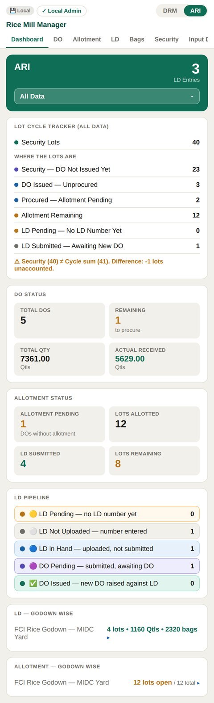
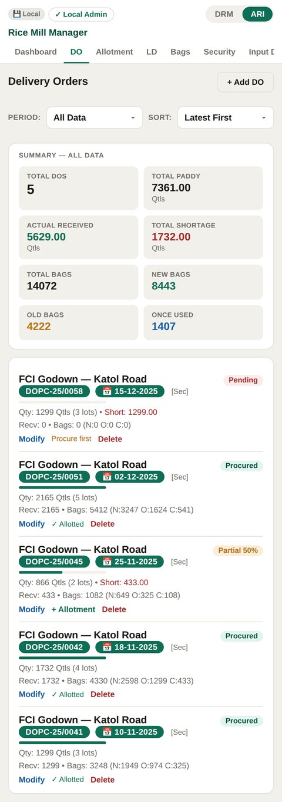
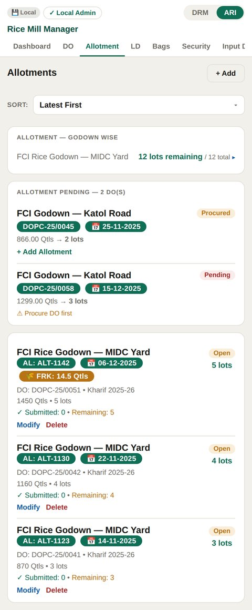
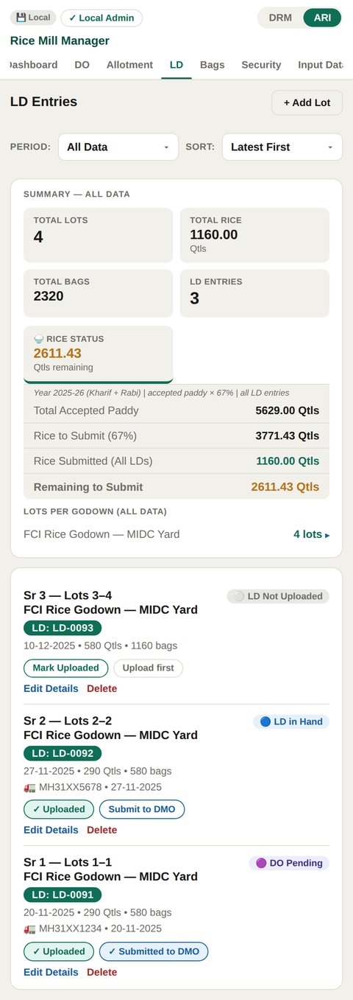
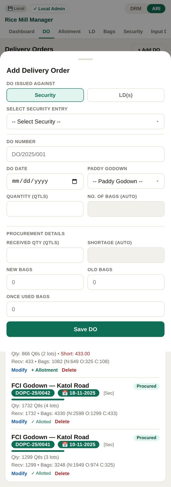

A mobile-first procurement & inventory PWA that replaced manual ledger tracking across two rice mills — built solo, end to end, with real-time cross-facility sync on Firebase.

Running ARI and operating DRM as a partner meant the same paddy-to-rice procurement cycle had to be tracked twice — on paper and in scattered Excel sheets, with no way to see either mill's position at a glance. Every stage of the cycle depended on the previous one balancing correctly, and nothing caught a mismatch until reconciliation day.
Every lot has to be somewhere in that chain at all times. The manual process made it almost impossible to answer a simple question: of the lots we put security down for, how many are stuck, and where?
The Lot Cycle Tracker is the core screen: it accounts for every security lot across six pipeline stages and flags the exact count if the numbers don't reconcile, instead of leaving that discovery for manual audit day.




The app was being used from both a laptop and a phone. At some point, entries stopped persisting — with no error, no warning, just data that quietly wasn't there the next time the app opened. Tracing it down surfaced two separate bugs stacked on top of each other.
window.storage for persistence, which works inside Claude's own environment but doesn't exist on a real Firebase-hosted domain. Every save and load was failing silently the moment the app left that environment.window.storage call with real localStorage, and added a _cloudLoaded flag that blocks any push to Firestore until cloud data has actually been received — making Firestore the single source of truth instead of a sync partner two devices could race against.The reconciliation rule the tracker enforces: total security lots must equal the sum of six mutually exclusive states. If they don't match, the exact discrepancy is surfaced rather than a generic warning.
A quieter bug lived here too: older DOs created before a refType field existed had it as undefined, and a strict equality filter (refType==='security') silently excluded every one of them from the tracker. The fix was treating a missing refType as its original default rather than as "not security" — a reminder that schema changes need to account for the data that predates them.
Procurement data ultimately has to be filed on mspbeam.in, the government mandi portal — a separate system with its own repetitive form for every truck transfer. I built a companion Tampermonkey userscript that autofills the recurring driver, vehicle, and bag-type fields from saved profiles, cutting a multi-field manual entry down to one click per shipment.